Tecnologia Aeroespacial
En el presente espacio les presentamos la Tecnología Aeroespacial desarrollada por nuestra empresa Villa Automation S.A.C
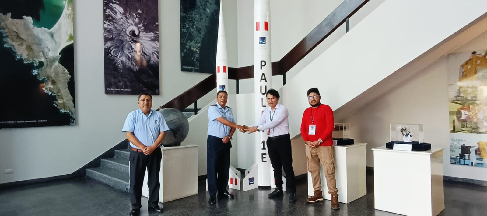Villa Automation desarrolla tecnología aeroespacial orientada a investigación, defensa y aplicaciones científicas. La empresa integra capacidades de diseño, simulación, fabricación y pruebas de sistemas aeroespaciales, abarcando cohetería, satélites experimentales, sistemas de control avanzado y plataformas de misión. El enfoque combina ingeniería electrónica, control automático, inteligencia artificial y tecnologías de medición ambiental.
¿Nuestros Productos?
Villa Automation S.A.C está desarrollando un proyecto avanzado de ingeniería relacionado con cohetes JICAAT (Jornada Internacional sobre Ciencias Avanzadas de Astrodinámica y Teledetección) y tecnologia de vehiculos aeroespaciales.
Villa Automation está trabajando en un proyecto ambicioso que combina ingeniería aeroespacial, automatización y análisis de datos para desarrollar un cohete funcional.
A pesar de los desafíos técnicos actuales, como fallos en el motor, este proyecto representa un paso importante hacia el avance de la tecnología espacial en la región.
Este proyecto abarca el desarrollo de sistemas de propulsión eficientes.

Cohetes experimentales JICAAT
Villa Automation lidera la línea de cohetes JICAAT, orientada a investigación y validación de tecnologías para sistemas de lanzamiento livianos. El Cohete JICAAT tiene como objetivo de ser re-utilizable en el tiempo, considerando el cuidado del medio ambiente y ser lanzados, recuperados y relanzados múltiples veces. Este sistema sera un complemento para el lanzamiento de pequeños satélites en el futuro, con fines comerciales, investigación y mitigación del medio ambiente terrestre y del espacio. Este proyecto es parte de las campaña de lanzamiento descrita en el artículo " Implementación de un programa nacional de actividades espacial del proyecto JICAAT, Perú, 2023-2032" (Villar, 2024). En consecuencia, en este artículo, presentamos como la empresa ha compartido avances significativos en este proyecto, incluyendo diseño y construcción, pruebas de encendido y ajustes finales del cohete. Además del cohete JICAAT I, Villa Automation S.A.C se está desarrollando el satélite JICAAT-V.A, un CubeSat destinado al monitoreo ambiental y de desechos espaciales. Villa Automation se encuentra en una etapa experimental y de prototipado, con proyectos como el cohete JICAAT que ya integran sistemas de guiado, navegación y control. No compite aún con empresas aeroespaciales consolidadas, pero sí se posiciona como un referente emergente en innovación tecnológica en Ayacucho. Su valor principal es la capacidad de crear desarrollos aeroespaciales de bajo costo y accesibles para investigación y educación. En el sector aeroespacial, Villa Automation tiene la oportunidad de consolidarse como un pionero regional en cohetería experimental y sistemas de control de vuelo, con proyección a integrarse en la cadena nacional e internacional de innovación. Su desafío será profesionalizar la investigación, escalar infraestructura y atraer talento e inversión para competir en proyectos aeroespaciales de mayor complejidad.
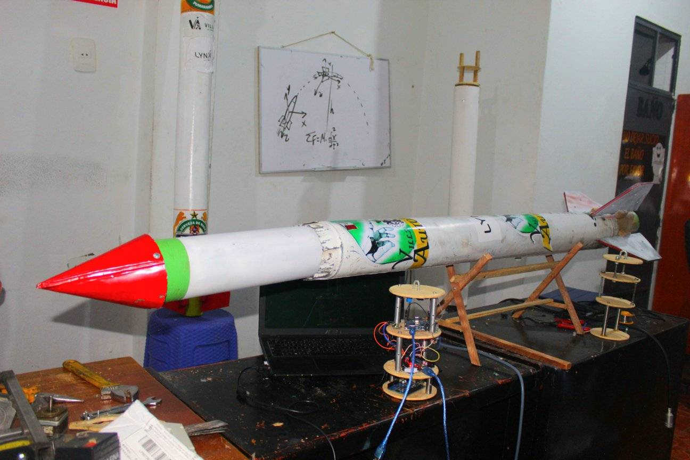
El problema que buscamos resolver es la falta de autonomía tecnológica en sistemas de guiado y control para ser implementados en lanzadores o vehículos aeroespaciales un ejemplo de ello el vehículo lanzador JICAAT, garantizando precisión, estabilidad y soberanía tecnológica para la defensa nacional peruana y aplicaciones aeroespaciales. En el presente proyecto de investigación y desarrollo se permitió demostrar la viabilidad de un sistema de guiado y control para luego ser aprobado en los lanzadores JICAAT o algún vehículo comercial desarrollado en la región de Ayacucho, aportando conocimiento, tecnología propia y capacidades estratégicas para el desarrollo aeroespacial y la defensa de nuestro país. Los resultados obtenidos en la simulación demuestran que el controlador diseñado logra un seguimiento preciso de la referencia angular, con estabilidad, bajo error estacionario y respuesta eficiente, condiciones indispensables para la operación confiable de vehículos de lanzamiento o plataformas aéreas no tripuladas. Este proyecto aporta conocimiento directamente aplicable en el fortalecimiento de los sistemas de defensa, vigilancia y control del espacio aéreo, así como en el desarrollo de tecnologías duales con fines científicos, educativos y de seguridad nacional. Asimismo, fomenta la formación de capital humano especializado y la transferencia tecnológica hacia sectores productivos e instituciones de investigación, consolidando a la región como un polo emergente en ingeniería aeroespacial.
- Diseño aerodinámico optimizado con modelado CFD.
- Control de trayectoria basado en sensores inerciales y algoritmos PID/MPC.
- Sistemas de telemetría en tiempo real y registro de datos en vuelo.
- Ensayos de estabilidad, análisis post-lanzamiento y reconstrucción de trayectoria.
- Desarrollo incremental de versiones de 1, 2 y 3 etapas para pruebas suborbitales.
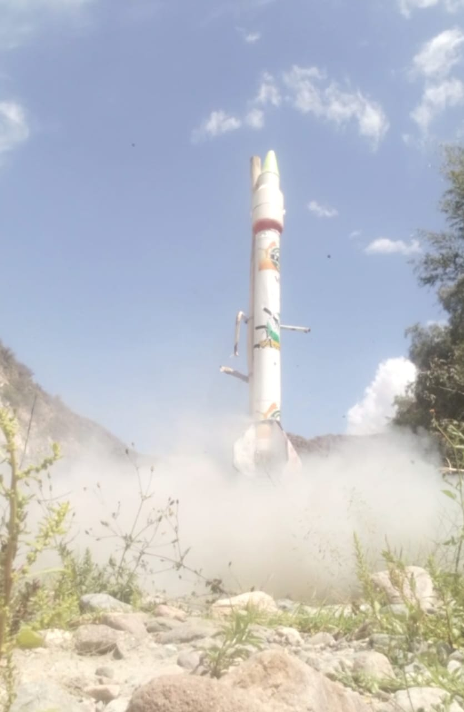
En el Perú, el desarrollo de tecnologías aeroespaciales y de defensa ha tenido un crecimiento sostenido en los últimos años, impulsado por instituciones públicas, universidades y empresas privadas que buscan fortalecer la soberanía tecnológica nacional. La Comisión Nacional de Investigación y Desarrollo Aeroespacial (CONIDA) y el ejercito del Perú ha sido la principal entidades interesadas en la gestión de nuestrosa proyectos aeroespaciales. Asimismo, nuestros programas académicos como el JICAAT (Jornadas de Ingeniería Científica Aeroespacial y Astronáutica del Perú), impulsado por Villa Automation SAC, han desarrollado cohetes experimentales de prueba, tales como el JICAAT III, con el objetivo de fortalecer la formación en guiado, propulsión y simulación de vuelo (Huayanay, 2024).
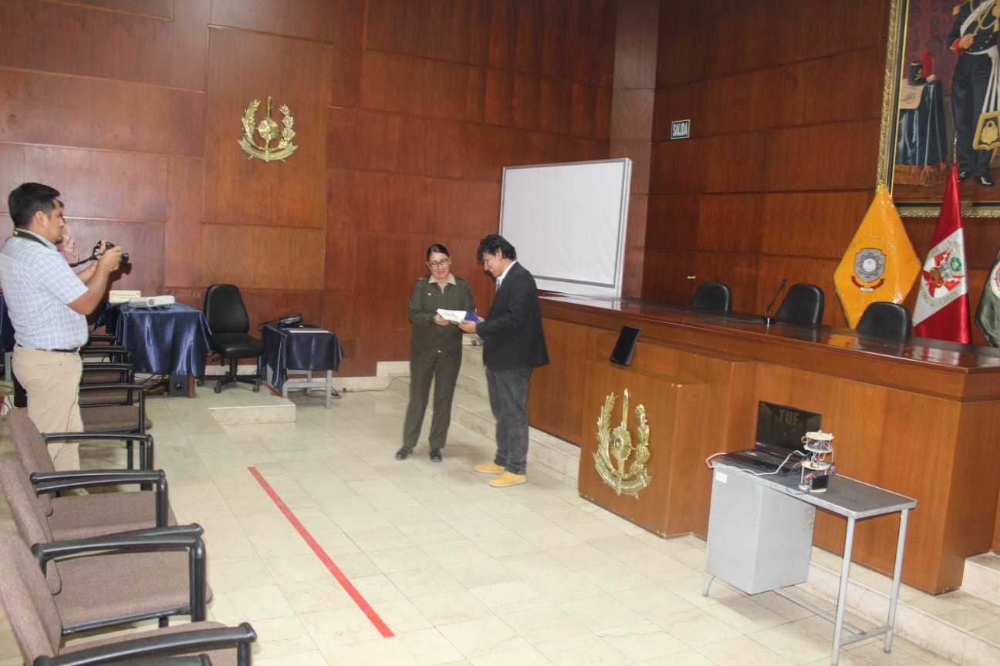 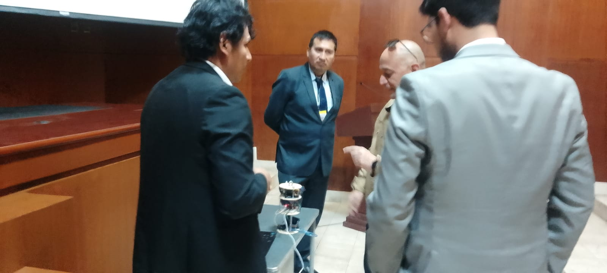
En el contexto actual de la defensa nacional peruana, la capacidad tecnológica para el desarrollo de sistemas autónomos de guiado, navegación control en vehículos lanzadores es muy limitada y depende en gran medida de equipos y software extranjeros. Esta dependencia tecnológica restringe la operativa y limita el avance en proyectos estratégicos de investigación y desarrollo vinculados a la industria aeroespacial y de defensa del país. La empresa Villa Automation SAC, en su línea de innovación tecnológica, ha emprendido el desarrollo de un sistema de guiado y control de vehículo lanzador, con el propósito de fortalecer las capacidades nacionales en el diseño, modelamiento, simulación y operación de cohetes experimentales y sistemas de lanzamiento controlado. Sin embargo, se identifican diversas problemáticas técnicas y operativas que obstaculizan la implementación eficiente de este sistema. Entre las principales dificultades se encuentran la falta de algoritmos de control robustos y adaptativos capaces de estabilizar el vehículo ante perturbaciones atmosféricas y variaciones dinámicas; la limitada integración entre los sensores de navegación (IMU, GPS, giroscopios) y los actuadores de control; así como la ausencia de un modelo matemático validado que permita simular con precisión la trayectoria y desempeño del vehículo durante las fases de ascenso, guiado y corrección. Muy pocas empresas o Universidades nacionales vienen trabajando en este sector, que es grande necesidad para el avance científico en sistemas de defensa, excepto de algunas instituciones como la CONIDA, FFAA o la Fuerza área del Perú (FAP) que vienen incentivando este tipo de proyectos ver Fig. 1.1. Además, la infraestructura experimental disponible para realizar pruebas de validación de los sistemas de guiado y control es aún incipiente, lo cual incrementa la incertidumbre en el comportamiento dinámico del lanzador y dificulta la optimización del regulador diseñado. Frente a esta situación, surge la necesidad de desarrollar un sistema de guiado y control integrado, que permita modelar, simular y validar el comportamiento del vehículo lanzador bajo diferentes condiciones de operación, utilizando métodos matemáticos avanzados, controladores óptimos y tecnologías de instrumentación nacional. Este esfuerzo busca contribuir al desarrollo de la autonomía tecnológica y al fortalecimiento de la capacidad científica del país peruano en materia de defensa y exploración aeroespacial.
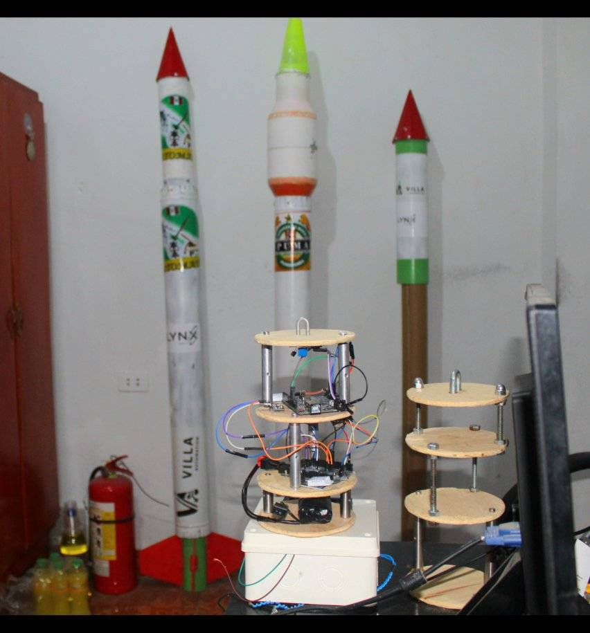
Fundamento físico y Matemáticos del Sistema de Guiado, Navegación y Control Autónomo (GNC)
El Sistema de Guiado, Navegación y Control (GNC) constituye el núcleo funcional de un vehículo lanzador, responsable de determinar su posición, orientación, trayectoria y maniobras correctivas durante las fases de ascenso, vuelo y estabilización. El objetivo principal es garantizar que el vehículo siga una trayectoria óptima hacia su destino, compensando perturbaciones externas y variaciones dinámicas en tiempo real. El sistema GNC se estructura en tres subsistemas interconectados: guiado (Guidance), navegación (Navigation) y control (Control), cada uno con fundamentos físicos y matemáticos específicos.
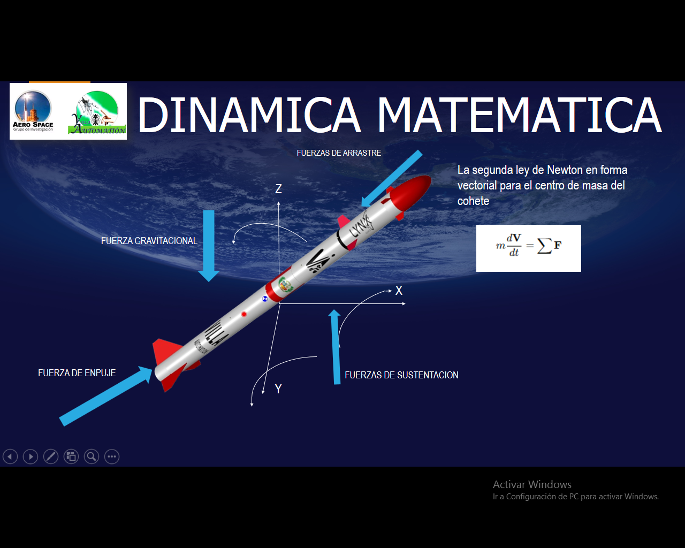
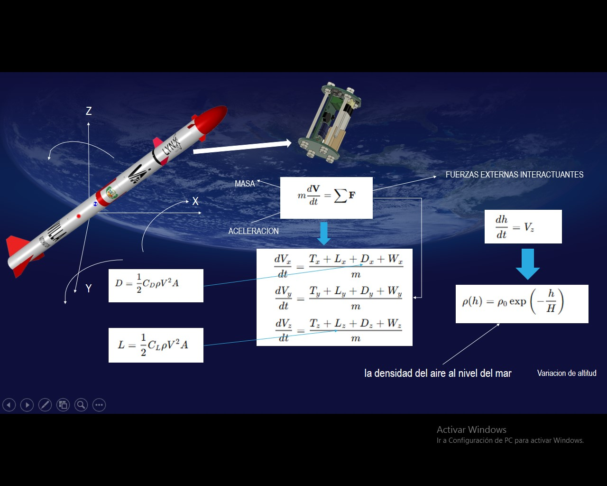
Descripción Sistema de Guiado y Control para Vehículo Lanzador
El Sistema de Guiado y Control (SGC) de un vehículo lanzador desarrollado por Villa Automation SAC constituye el conjunto de subsistemas encargados de determinar, supervisar y corregir la trayectoria y orientación del cohete durante las distintas fases de vuelo. Su función principal es garantizar que el vehículo siga la trayectoria óptima predeterminada, manteniendo la estabilidad dinámica y la precisión direccional frente a perturbaciones externas, tales como el viento, variaciones de masa y errores de medición. El prototipo tiene medidas entre 8 a 10 cm de lago y 5 a 6 cm de diámetro aproximadamente, ver figura 2.3.
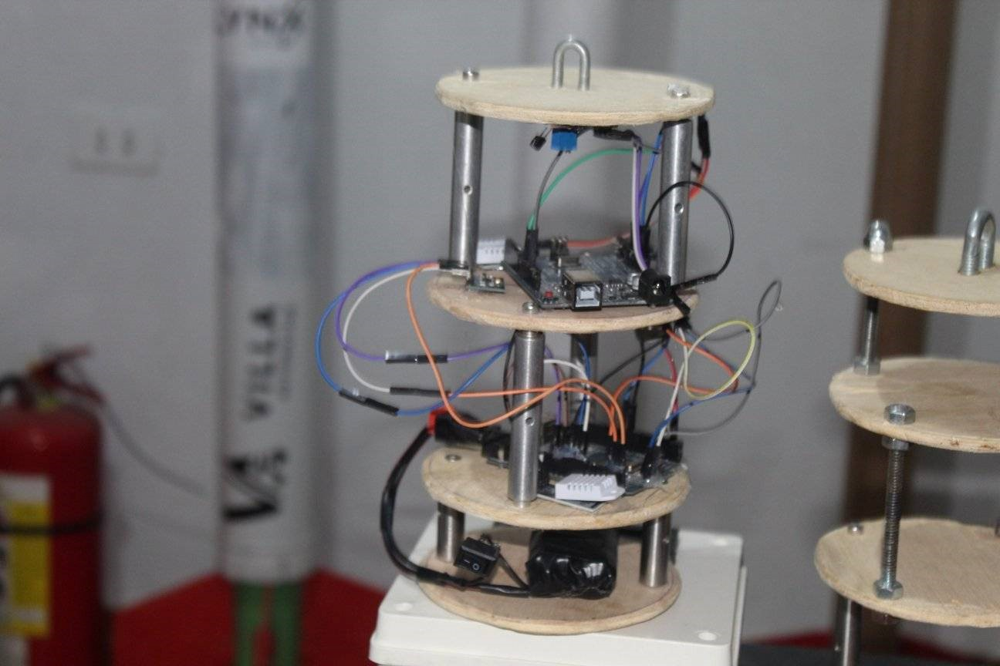
Funcionalidad Sistema de Guiado y Control para Vehículo Lanzador
En el caso del vehículo lanzador JICAAT, el sistema desarrollado por Villa Automation SAC cumple las siguientes funciones específicas: • Determinación autónoma de trayectoria mediante simulación en Scilab/Xcos. • Estimación inercial mediante sensores IMU-GPS integrados. • Ejecución de control PID/LQR sobre actuadores de empuje vectorial. • Transmisión de telemetría a estación base por radiofrecuencia. Registro de parámetros de vuelo (altitud, orientación, aceleración) en memoria SD para análisis post-lanzamiento. Estas funcionalidades permiten validar los algoritmos de guiado y control desarrollados, así como demostrar la capacidad nacional de implementar sistemas autónomos de precisión aplicables a la defensa y la investigación aeroespacial, como se muestra la figura.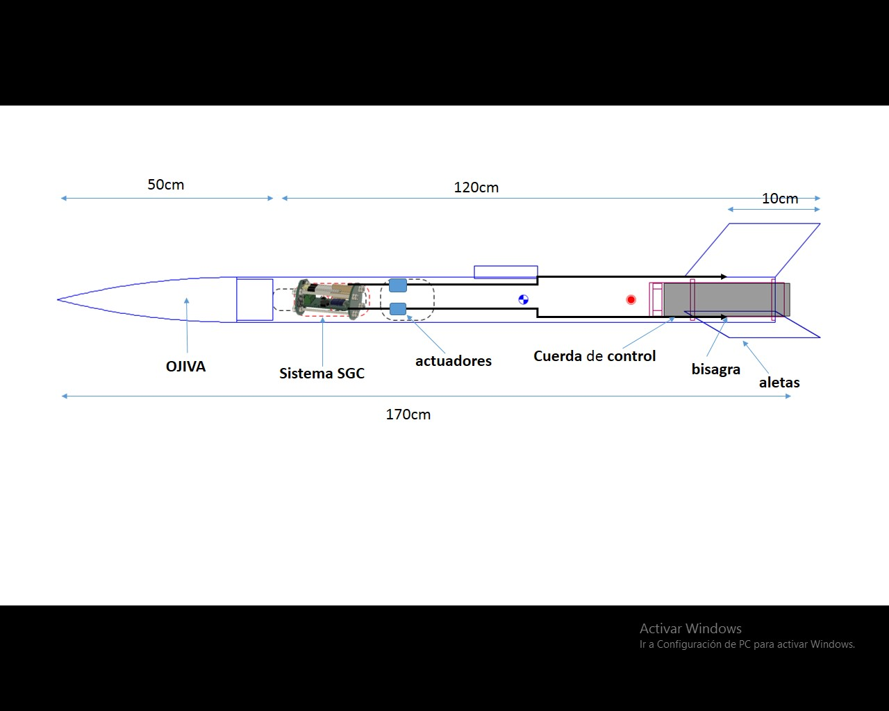
Implementación y pruebas de campo
A partir de esta configuración, se puede analizar cómo y dónde implementar el sistema de guiado y control (SGC) desarrollado por la empresa Villa Automation SAC. El cohete JICAAT está compuesto por: • Cofia (roja y verde): protege la carga útil o el módulo de aviónica, asimismo donde ira el sistema de control y guiamiento. • Cuerpo central: fuselaje de aluminio o PVC reforzado, con logotipos y refuerzos visibles. • Aletas traseras: fijas, para estabilidad aerodinámica pasiva. • Montaje de laboratorio: en un caballete de madera, junto con estructuras electrónicas externas (prototipos de aviónica o banco de prueba). Vehículo JICAAT tipo cohete/sonda pequeña: fuselaje cilíndrico, cofia/aviónica-baya cilíndrico que están montando en la parte superior del motor/estructura. Próximo al motor se tiene las aletas triangulares con bisagras en la parte inferior (estabilización aerodinámica pasiva). Luego próximo una plataforma o guía/raíl metálico lateral para lanzamiento (rail/launch rod) sujeta al fuselaje. Próximo al motor se observa un anclaje/placa metálica cerca de la entrada del bay (posible brida de sujeción del motor o adaptador de aviónica). La aviónica con el sistema de SGC-bay se está colocando manualmente, atención a conexiones eléctricas y sujeción.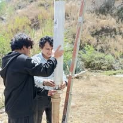
Pruebas de lanzamiento y obtención de datos crudos
El diseño de un motor sólido para un cohete experimental es una tarea que requiere conocimientos avanzados en química, física, ingeniería de materiales y mecánica de fluidos (Sutton, 2011). Estas pruebas se realizaron en un área bien ventilada, lejos de estructuras o personas, cercado de la ciudad de Ayacucho y Muyurina, Ayacucho. En un ambiente despejado con temperaturas estables dentro del rango previsible. Se determina el empuje necesario para el cohete JICAAT. Usando la ecuación de Tsiolkovsky para calcular el rendimiento deseado. Se diseñó el grano del propulsor considerando el área de combustión.
 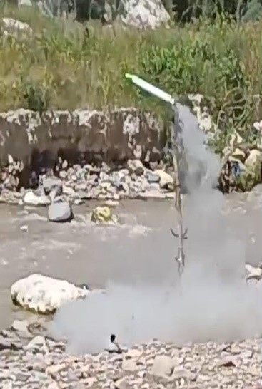
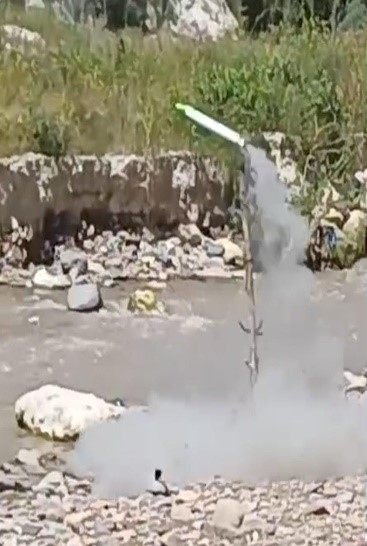

Se observa que el vehículo asciende con ángulo de inclinación inicial (~10–20°), con un apogeo de alcance de 58 metros, para luego cambiar de trayectoria en forma de curvatura: indica que el vector de empuje estaba regularmente alineado con el centro de masa (CM), y que el sistema de control aún no corrigió la desviación después de una altitud determinada. De acuerdo a los datos recopilados se interpreta que hubo oscilaciones o correcciones (el sistema de control actuando con retardo o sobrecorrección), esto es representado en la curvatura ascendente
Conclusión y recomendaciones
Los resultados del proyecto confirman que el esquema del sistema SGC propuesto puede garantizar una correcta orientación del vehículo lanzador en el plano vertical, optimizando la maniobrabilidad y la estabilidad durante la fase de guiado. El desempeño del sistema es adecuado para ser empleado como base en futuras pruebas experimentales o de vuelo real de vehículos aeroespaciales. El desarrollo e implementación del sistema de guiamiento y control (GNC) para luego ser probada en un vehículo lanzador experimental JICAAT constituye un avance significativo en la investigación y formación tecnológica en el campo aeroespacial del Perú y la región andina.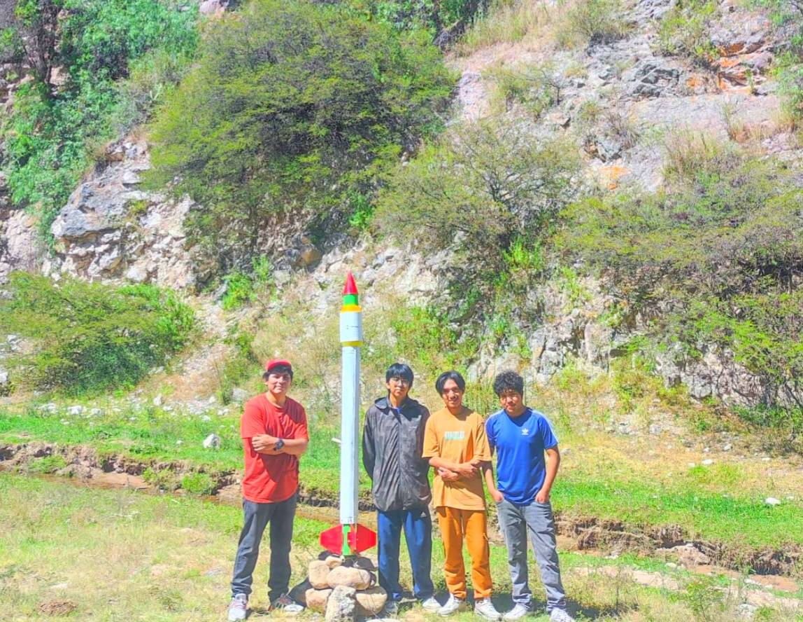
Los resultados obtenidos en la simulación demuestran que el controlador diseñado logra un seguimiento preciso de la referencia angular, con estabilidad, bajo error estacionario y respuesta eficiente, condiciones indispensables para la operación confiable de vehículos de lanzamiento o plataformas aéreas no tripuladas. Donde la validación del modelo dinámico y del algoritmo de control permite establecer una base sólida para el diseño de futuros sistemas de navegación, guiado y control en cohetes, drones y vehículos autónomos. Asimismo, este tipo de desarrollos refuerza la capacidad científica y tecnológica nacional, promoviendo la autonomía en ingeniería de sistemas aeroespaciales.
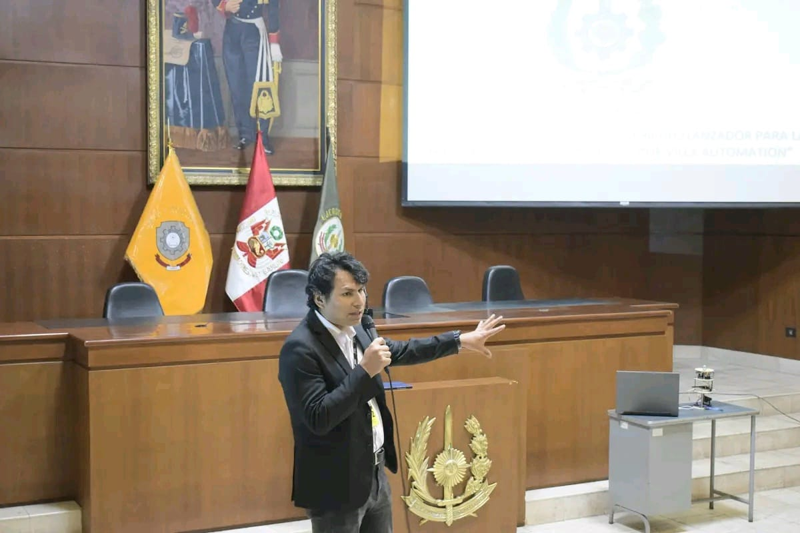
Desde una perspectiva estratégica, el proyecto aporta conocimiento directamente aplicable en el fortalecimiento de los sistemas de defensa, vigilancia y control del espacio aéreo, así como en el desarrollo de tecnologías duales con fines científicos, educativos y de seguridad nacional. Asimismo, fomenta la formación de capital humano especializado y la transferencia tecnológica hacia sectores productivos e instituciones de investigación, consolidando a la región como un polo emergente en ingeniería aeroespacial.
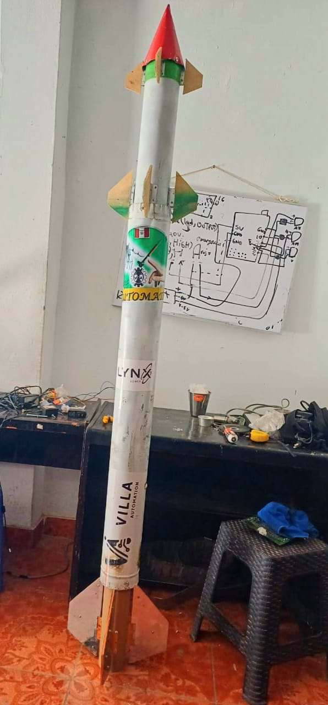

Presupuesto de cohetes experimentales
- Basico: 2000.0 $ (dolares)
- avanzado: 6000.0 $ (dolares)